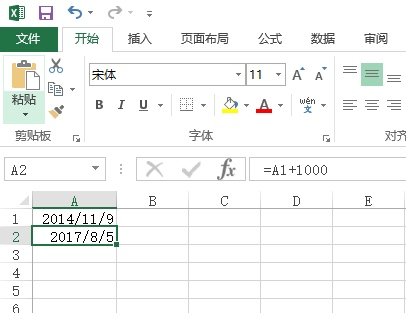

方程整数解
方程: a2 + b2 + c2 = 1000
这个方程有整数解吗？有：a,b,c=6,8,30 就是一组解。
你能算出另一组合适的解吗？
请填写该解中最小的数字。
注意：你提交的应该是一个整数，不要填写任何多余的内容或说明性文字。
直接暴力枚举。。
#include <bits/stdc++.h>
using namespace std;
int main()
{
for (int i=1;i<=33;i++) {
for (int j=i;j<=33;j++) {
for (int k=j;k<=33;k++) {
if (i*i+j*j+k*k==1000) {
printf("%d %d %d\n",i,j,k);
}
}
}
}
return 0;
}
答案是10.
星系炸弹
在X星系的广袤空间中漂浮着许多X星人造“炸弹”，用来作为宇宙中的路标。
每个炸弹都可以设定多少天之后爆炸。
比如：阿尔法炸弹2015年1月1日放置，定时为15天，则它在2015年1月16日爆炸。
有一个贝塔炸弹，2014年11月9日放置，定时为1000天，请你计算它爆炸的准确日期。
请填写该日期，格式为 yyyy-mm-dd
即4位年份2位月份2位日期。比如：
2015-02-19
请严格按照格式书写。不能出现其它文字或符号。
这个直接excel或者手算就可以了。。
计算：
2014.11. 9----2015. 1. 1 53天
2015. 1. 1 ----2017. 1. 1 731天
2017. 1. 1 ----2017. 8. 1 212天
2017. 8. 1 ----2017. 8. 5 4天
53+731+212+4=1000天
Excel电子表格法：
打开Excel电子表格，在单元格A1中输入2014/11/9，在单元格B1中输入公式=A1+1000即可得到答案。
但是Excel中有效日期为1900年1月1日以后的日期，1900年以前的日期无法正常显示。
奇妙的数字
小明发现了一个奇妙的数字。它的平方和立方正好把0~9的10个数字每个用且只用了一次。
你能猜出这个数字是多少吗？
请填写该数字，不要填写任何多余的内容。
还是暴力枚举就可以了。
#include <bits/stdc++.h>
using namespace std;
int b[10];
void solu(int x,int b[])
{
while (x) {
b[x%10]++;
x/=10;
}
}
int main()
{
for (int i=1,j;i<9999;i++) {
memset(b,0,sizeof(b));
solu(i*i,b);
solu(i*i*i,b);
for (j=0;j<=9;j++)
if (b[j]!=1) break;
//每个b[i]都等于1，j才会大于9
if (j>9) {
printf("%d\n",i);
break;
}
}
return 0;
}
格子中输出
StringInGrid函数会在一个指定大小的格子中打印指定的字符串。
要求字符串在水平、垂直两个方向上都居中。
如果字符串太长，就截断。
如果不能恰好居中，可以稍稍偏左或者偏上一点。
下面的程序实现这个逻辑，请填写划线部分缺少的代码。
#include <stdio.h>
#include <string.h>
void StringInGrid(int width, int height, const char* s)
{
int i,k;
char buf[1000];
strcpy(buf, s);
if(strlen(s)>width-2) buf[width-2]=0;
printf("+");
for(i=0;i<width-2;i++) printf("-");
printf("+\n");
for(k=1; k<(height-1)/2;k++){
printf("|");
for(i=0;i<width-2;i++) printf(" ");
printf("|\n");
}
printf("|");
printf("%*s%s%*s",_____________________________________________); //填空
printf("|\n");
for(k=(height-1)/2+1; k<height-1; k++){
printf("|");
for(i=0;i<width-2;i++) printf(" ");
printf("|\n");
}
printf("+");
for(i=0;i<width-2;i++) printf("-");
printf("+\n");
}
int main()
{
StringInGrid(20,6,"abcd1234");
return 0;
}
很明显，填空的上面是输出上半部分，下面是输出下半部分，所以我们填的这个就是正中间那行。
要做这题首先要知道%*s是个什么。。。
反正当年是没填出的居多 输出控制符
也就是说碰到*的时候我们要额外给一个整型参数控制宽度。
我们看到第9行，buf已经完成了截断，而s没有截断，所以我们要用也只能用buf。
然后我们算出左边右边的宽度，值得注意的是，左右的宽度表达式是不一样的。
因为题目里说了不对称是要靠左，可以把abcd1234最后的4去掉看看效果。
感觉查了这么多博客都没一个人填对的。。。唉= =
答案：(width-strlen(buf)-2)/2,"",buf,(width-strlen(buf)-2+1)/2,""
九数组分数
1,2,3…9 这九个数字组成一个分数，其值恰好为1/3，如何组法？
下面的程序实现了该功能，请填写划线部分缺失的代码。
#include <stdio.h>
void test(int x[])
{
int a = x[0]*1000 + x[1]*100 + x[2]*10 + x[3];
int b = x[4]*10000 + x[5]*1000 + x[6]*100 + x[7]*10 + x[8];
if(a*3==b) printf("%d / %d\n", a, b);
}
void f(int x[], int k)
{
int i,t;
if(k>=9){
test(x);
return;
}
for(i=k; i<9; i++){
{t=x[k]; x[k]=x[i]; x[i]=t;}
f(x,k+1);
_________________________________ // 填空处
}
}
int main()
{
int x[] = {1,2,3,4,5,6,7,8,9};
f(x,0);
return 0;
}
这主要考的是回溯的基本概念 回溯资料
简单的说这一次做的改变肯定要复原。
答案：{t=x[k]; x[k]=x[i]; x[i]=t;}
牌型种数
小明被劫持到X赌城，被迫与其他3人玩牌。
一副扑克牌（去掉大小王牌，共52张），均匀发给4个人，每个人13张。
这时，小明脑子里突然冒出一个问题：
如果不考虑花色，只考虑点数，也不考虑自己得到的牌的先后顺序，自己手里能拿到的初始牌型组合一共有多少种呢？
请填写该整数，不要填写任何多余的内容或说明文字。
dfs，当然首先要知道每个数字都有四张牌。
#include <bits/stdc++.h>
using namespace std;
int cnt[15],ans=0;
void dfs(int dep,int last)
{
if (dep>13) {
ans++;
return;
}
for (int i=last;i<=13;i++) {
if (cnt[i]<4) {
cnt[i]++;
dfs(dep+1,i);
cnt[i]--;
}
}
}
int main()
{
dfs(1,1);
printf("%d\n",ans);
return 0;
}
答案：3598180
手链样式
小明有3颗红珊瑚，4颗白珊瑚，5颗黄玛瑙。
他想用它们串成一圈作为手链，送给女朋友。
现在小明想知道：如果考虑手链可以随意转动或翻转，一共可以有多少不同的组合样式呢？ 请你提交该整数。不要填写任何多余的内容或说明性的文字。
#include <cstdio>
#include <cstring>
#include <iostream>
using namespace std;
int res[10000][12],a[12];
bool same(int a[],int b[])
{
for (int k=0;k<12;k++) {
bool f=true;
for (int i=0;i<12;i++) {
if (a[i]!=b[(i+k)%12]) { //因为是环形，不固定起点。所以用(i+k)%12
f=false;
break;
}
}
if (f) return true;
f=true;
for (int i=0;i<12;i++) {
if (a[11-i]!=b[(i+k)%12]) { //又因为可以翻转所以 从左边或者右边都应该检查。
f=false;
break;
}
}
if (f) return true;
}
return false;
}
int main()
{
int ans=0;
a[0]=a[1]=a[2]=1;
a[3]=a[4]=a[5]=a[6]=2;
a[7]=a[8]=a[9]=a[10]=a[11]=3;
do {
bool ok=true;
for (int i=1;i<=ans;i++) {
if (same(res[i],a)) {
ok=false;
break;
}
}
if (ok) {
ans++;
for (int i=0;i<12;i++) {
res[ans][i]=a[i];
}
}
} while (next_permutation(a,a+12));
printf("%d\n",ans);
return 0;
}
首先来分析一下题目：3类珠子，一共12个，我们用字符串a="333444455555“表示，要求环形的排列数，注意理解可以随意转动或翻转，这跟直线型的有不同。举个例子：
例如，在直线型排列中a="333444455555“ 和 b="444455555333“ 是不同的排列，原因是直线型的起点是固定的，对应位置元素只要有一个不同，则排列不同。但是在环形里面，由于可以任意转动，也就是起点不固定的，当b以第一个3为起点时往右数时，它就和a完全一样了。另外，任意翻转的意思是b不但起点不固定，而且排列的方向可以往右数，也可以往左数。
dfs写起来比较难受，这题就用next_permutation，改函数的方法是对数组从低到高逐次进行全排列。若可以进行排列就返回true，反之false
所以只要把所有答案都记录下来，每次都正反判断一遍即可。
饮料换购
乐羊羊饮料厂正在举办一次促销优惠活动。乐羊羊C型饮料，凭3个瓶盖可以再换一瓶C型饮料，并且可以一直循环下去(但不允许暂借或赊账)。
请你计算一下，如果小明不浪费瓶盖，尽量地参加活动，那么，对于他初始买入的n瓶饮料，最后他一共能喝到多少瓶饮料。
输入：一个整数n，表示开始购买的饮料数量（0 < n < 10000）
输出：一个整数，表示实际得到的饮料数
例如：
用户输入：
100
程序应该输出：
149
用户输入：
101
程序应该输出：
151
资源约定：
峰值内存消耗 < 256M
CPU消耗 < 1000ms
这道题简单模拟即可。
#include <bits/stdc++.h>
using namespace std;
int main()
{
int s,n;
scanf("%d",&n);
s=n;
while (n>=3) {
s+=n/3;
n=n/3+n%3;
}
printf("%d\n",s);
return 0;
}